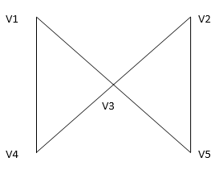

Графы. Общие сведения.
Маршруты, цепи и циклы.
Маршрутом называется чередующаяся последовательность вершин и ребер графа:
v1,x1,v2,x2,v3,...,xk,vk+1 в которой любые два соседних элемента инцидентны. Для обычного неориентированного графа достаточно указать в маршруте только последовательность ребер или вершин, т.к. там нет петель. Если v1 и vk+1 совпадают, то маршрут замкнут. Иначе маршрут называется открытым. Цепью называется маршрут, в котором все ребра различны. Если в цепи также различны и вершины, то такая цепь называется простой. Замкнутая цепь, называется циклом. Цикл, в котором все вершины, кроме первой и последней, попарно различны, называется простым циклом. Граф без циклов называется ациклическим. Пример:
2. v1,v3,v5,v2,v3,v4 – цепь, но не простая цепь.
3. v1,v4,v3,v2,v5 – простая цепь.
4. v1,v3,v5,v2,v3,v4,v1 – цикл, но не простой цикл.
5 v1,v3,v4,v1 –простой цикл
v1,x1,v2,x2,v3,...,xk,vk+1 в которой любые два соседних элемента инцидентны. Для обычного неориентированного графа достаточно указать в маршруте только последовательность ребер или вершин, т.к. там нет петель. Если v1 и vk+1 совпадают, то маршрут замкнут. Иначе маршрут называется открытым. Цепью называется маршрут, в котором все ребра различны. Если в цепи также различны и вершины, то такая цепь называется простой. Замкнутая цепь, называется циклом. Цикл, в котором все вершины, кроме первой и последней, попарно различны, называется простым циклом. Граф без циклов называется ациклическим. Пример:

1.v1,v3,v1,v4 – маршрут, но не цепь. 2. v1,v3,v5,v2,v3,v4 – цепь, но не простая цепь.
3. v1,v4,v3,v2,v5 – простая цепь.
4. v1,v3,v5,v2,v3,v4,v1 – цикл, но не простой цикл.
5 v1,v3,v4,v1 –простой цикл